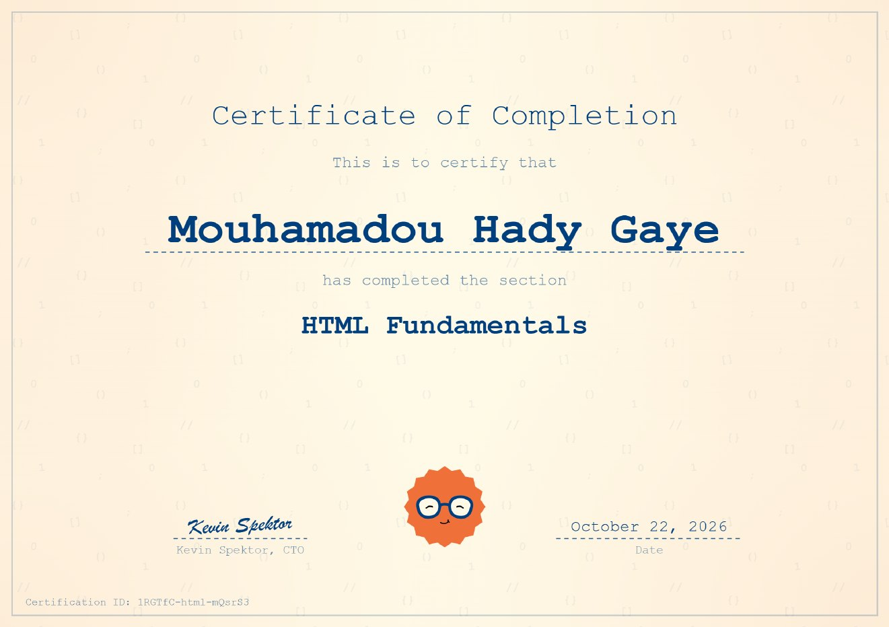
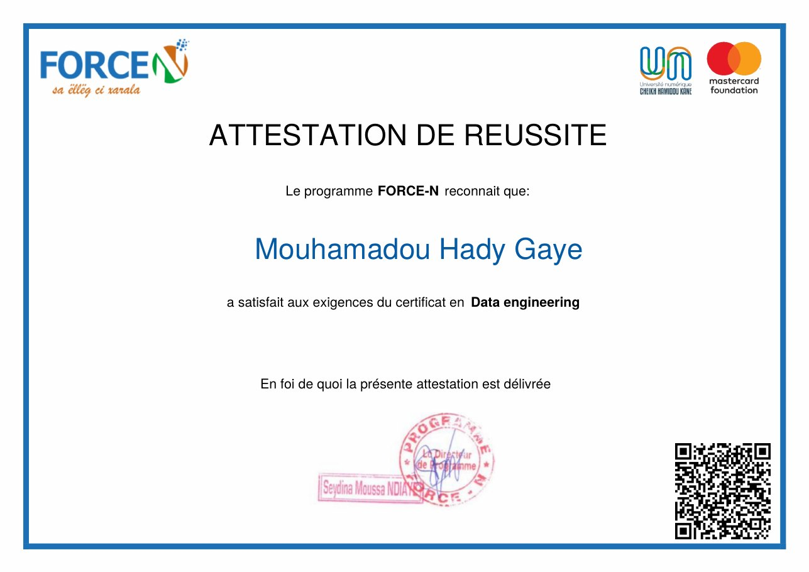

Cybersécurité
Comprendre les menaces, les vulnérabilités et les méthodes de protection des systèmes informatiques.
Passionné par l'informatique, les réseaux et la sécurité numérique, je développe mes connaissances pour comprendre les systèmes, relever des défis techniques et construire des solutions utiles.
Je m'appelle Mouhamadou Hady Gaye et je suis étudiant en cybersécurité. Je m'intéresse au fonctionnement des ordinateurs, aux réseaux informatiques et aux mécanismes qui permettent de protéger les systèmes et les données.
Mon objectif est de progresser régulièrement, de mettre la théorie en pratique et de développer des compétences solides à travers des exercices et des projets personnels.
Chaque notion comprise et chaque projet réalisé sont une nouvelle étape dans mon parcours informatique.
Voici les domaines que je souhaite explorer et approfondir au fil de ma formation.
Comprendre les menaces, les vulnérabilités et les méthodes de protection des systèmes informatiques.
Explorer TCP/IP, les modèles OSI, l'adressage IP et la configuration des équipements réseau.
Développer ma logique, apprendre les langages de programmation et créer des projets pratiques.
Ce que je maîtrise déjà, ce que j’ai validé par un certificat et ce que je continue d’apprendre.
Adressage IP, sous-réseaux, configuration de switchs et de routeurs, simulation de topologies avec Cisco Packet Tracer.
Voir mon TP réseauCapture et analyse du trafic réseau : filtres, lecture des trames et compréhension des protocoles échangés.
Certificat obtenu dans le cadre du programme FORCE-N, avec l’Université numérique Cheikh Hamidou Kane.
Voir l’attestationNotions fondamentales du langage validées par le certificat « HTML Fundamentals ».
Voir le certificatMise en forme et mise en page de pages web : je continue d’approfondir en pratiquant sur mes propres projets.
Apprentissage du langage pour développer ma logique de programmation et automatiser des tâches.
Un exercice pratique en réseau, un projet d’équipe et les certificats qui valident mes bases.
Conception d’une topologie de deux réseaux locaux de cinq postes chacun, reliés par deux routeurs, avec un serveur sur le premier réseau.
Plateforme web qui réunit les étudiants de l’Université numérique Cheikh Hamidou Kane : chacun y crée son profil, retrouve les autres étudiants, partage ses projets et accède aux ressources de cours.

Délivré le 22 octobre 2026 et signé Kevin Spektor, CTO. Il valide mes bases du langage HTML.
Identifiant : 1RGTfC-html-mQsrS3
Ouvrir le certificat en PDF
Certificat du programme FORCE-N, mené avec l’Université numérique Cheikh Hamidou Kane et la Mastercard Foundation.
Ouvrir l’attestation en PDFJe crois que la maîtrise de l'informatique passe par la curiosité, la pratique et la persévérance. Ce site est une première étape pour présenter mon profil et partager mon évolution.
Un projet, une idée ou simplement une discussion sur l'informatique ? Je serai ravi d'échanger avec vous.